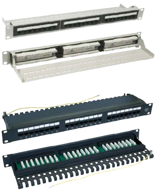

Patch Panels Category 5e
- 19" standard.
- The basis of cat. 5e network system, designed
for main and through distribution points of fast
telecommunications systems.
- UTP panels are constructed on the basis of specially
designed boards with compensation circuit.
- Equipped with universal IDC (Insulation Displacement
Contact), compatible with 110 and Krone connectors
in 568A/B standard.
- The drawer type STP patch panel is equipped
with grounding strip providing connection of the cable
shield to panel shield.
- Place for cable labels.
- Convenient use and reconfiguration.
- Dismountable shelf and cable ties providing easy cable
management.
WNK-805-114, WNK-805-218, WNK-805-524, T-SO-805-
526 and T-SO-900-025 panel sets also include assembly
hardware and cable ties.
